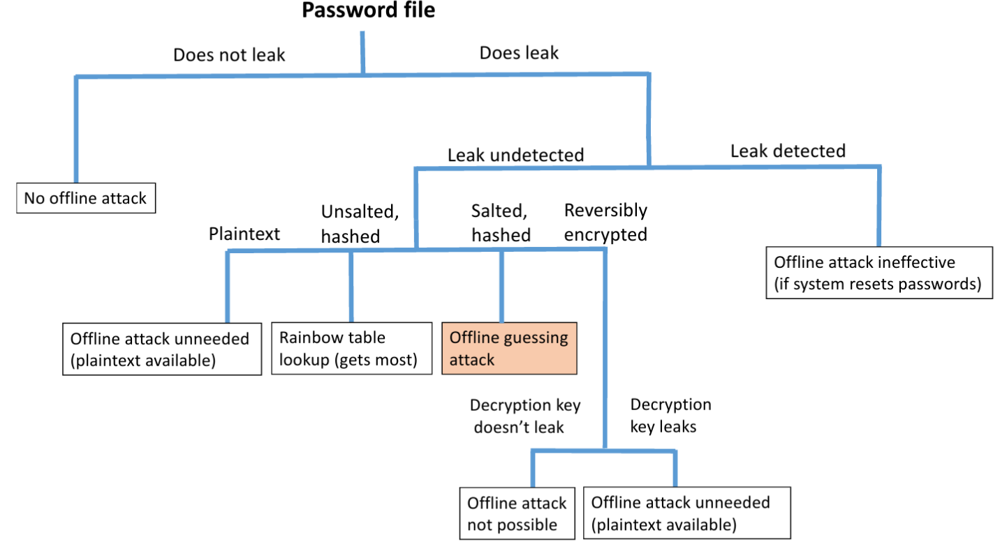
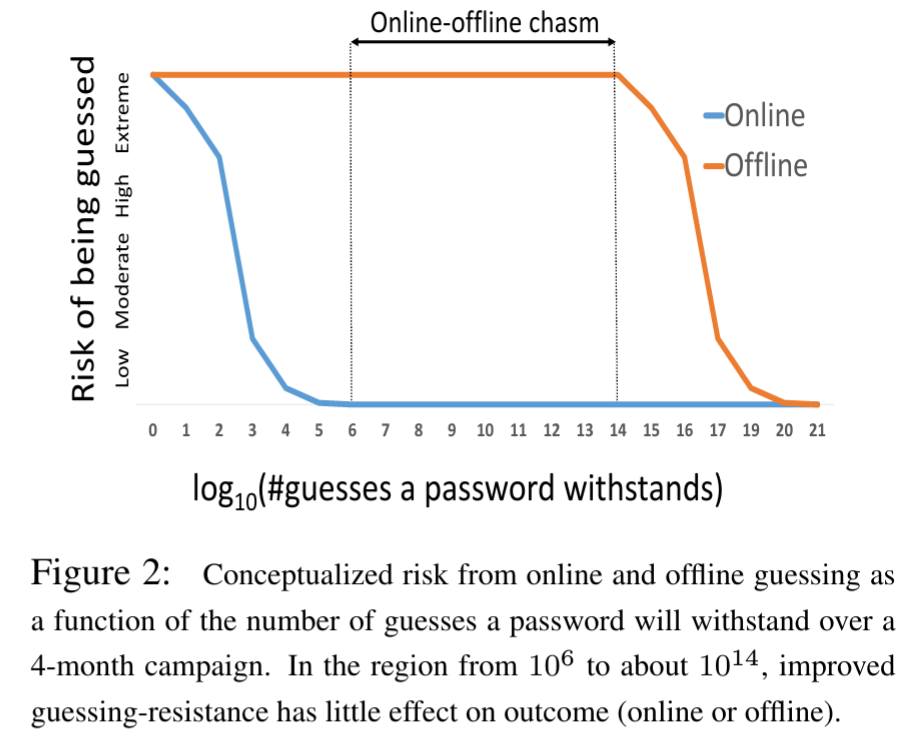

# An Administrator's Guide to Internet Password Research #### Dinei Florencio, Cormac Herley, and Paul C. van Oorschot, Microsoft Research, Usenix LISA, November 2014 <small><a href="http://zappala.byu.edu">Daniel Zappala</a></small> <small>Brigham Young University</small>
# Takeaways <ul> <li style="padding: 20px 0px 40px 0px"> examines the research literature on passwords and identifies what works, what does not work, and what remains unknown </li> <li>offers practical advice for system administrators </li> </ul>
# Categorizing Accounts * *don't care*: no impact * one-time email, nuisance accounts for free articles * don't bother users about security of these passwords * *low consequence*: minimal impact or easily repaired * social networks (infrequent users), discussion groups (infrequent users), online newspapers, accounts not storing credit cards * users may just rely on password reset * *medium consequence*: limited loss (e.g. $50 cap on credit card loss) * secondary email account, online shopping sites, social network accounts (casual users), human resource sites * user effort resisting online attacks is well spent --- # Categorizing Accounts * *high consequence*: critical accounts related to employment, finance, or important documents * primary or professional email accounts, social networks (heavy users and celebrities), online banking, SSH and VPN access, corporate databases * spend user effort securing passwords, provide two-factor authentication * *ultra-sensitive*: major, life-altering, irreversible damage * multi-million dollar banking transactions, authorization to launch military weapons, encryption of national secrets * use something better than a password --- # Password Strength * examined leaked datasets from Rockyou, Gawker, Tianya, eHarmony, LinkedIn, Evernote, Adobe, Cupid Media * only Gawker and Evernote were hashed and salted * ideally, users choose passwords randomly * in practice, users choose common words (password, monkey, princess), proper nounds (julie, snoopy), and predictible sequences (abcdefg, asdfgh, 123456) --- # Password Strength * metrics such as entropy are misleading * $L*log_2(C)$, L = length, C = size of alphabet * P@sswOrd is far more common than gunpyo, but has higher entropy * *guessing resistance*: estimate of how many guesses needed to crack password --- # Online and Offline Guessing * attacks on client don't involve guessing: malware, phishing, sniffing * attacks on server's public facing web site: online guessing * attacks on server's back end web site: offline guessing * gain access to system * be undetected (sysadmin can otherwise force system-wide password resets) * test passwords against hashes and salts --- # Offline Attacks  --- # How Many Guesses? <div style="float:left;width:35%;"> <ul> <li>determines how difficult a password must be to guess</li> <li>attackers can't make as many online guesses: need to be indistinguishable from ordinary traffic</li> </ul> </div> <div style="float:right;width:60%;">  </div> --- # Policies * composition and length * e.g. at least 8 characters, some uppercase and numbers * users respond with minimally compliant choices * overall, policies help to protect against online attacks, but not offline ones * users dislike them strongly * authors feel there are better alternatives --- # Policies * blacklists: common passwords or leaked passwords * protects users most at risk * can ban most popular passwords used at your site * expiration * only helpful for offline attacks * users choose highly predictable variants * rate-limiting and lockout * lockout can be abused for denial of service attack * rate-limiting effective against online attacks * can require CAPTCHA for new IPs --- # Policies * password meters * many JavaScript libraries are flawed and useless * need a stringent meter to have significant effect * do change user behavior for important accounts * backup questions and reset * evidence shows that in practice the guessing space of security questions is far too small or can be looked up online * generally regarded a bad idea until more research done
# Advice: Do * store passwords with salt and iterated hashing: slows offline guessing * in case of break-in, detect leak and reset all user passwords * use rate limiting and lockout: reduces online guessing * use blacklisting: eliminates most-probable passwords * use length rules: use $\geq 8$ --- # Advice: Don't * use password meters: marginal gain * use password aging: more harm than good * use character-set rules: often bad return on user effort --- # Conclusions * we don't know how to help users resist offline password attacks -- all attempts so far are failures * failed attempts waste a lot of user effort * the task gets harder every year * zero-user-burden mechanisms that largely or entirely eliminate online attacks are rarely used